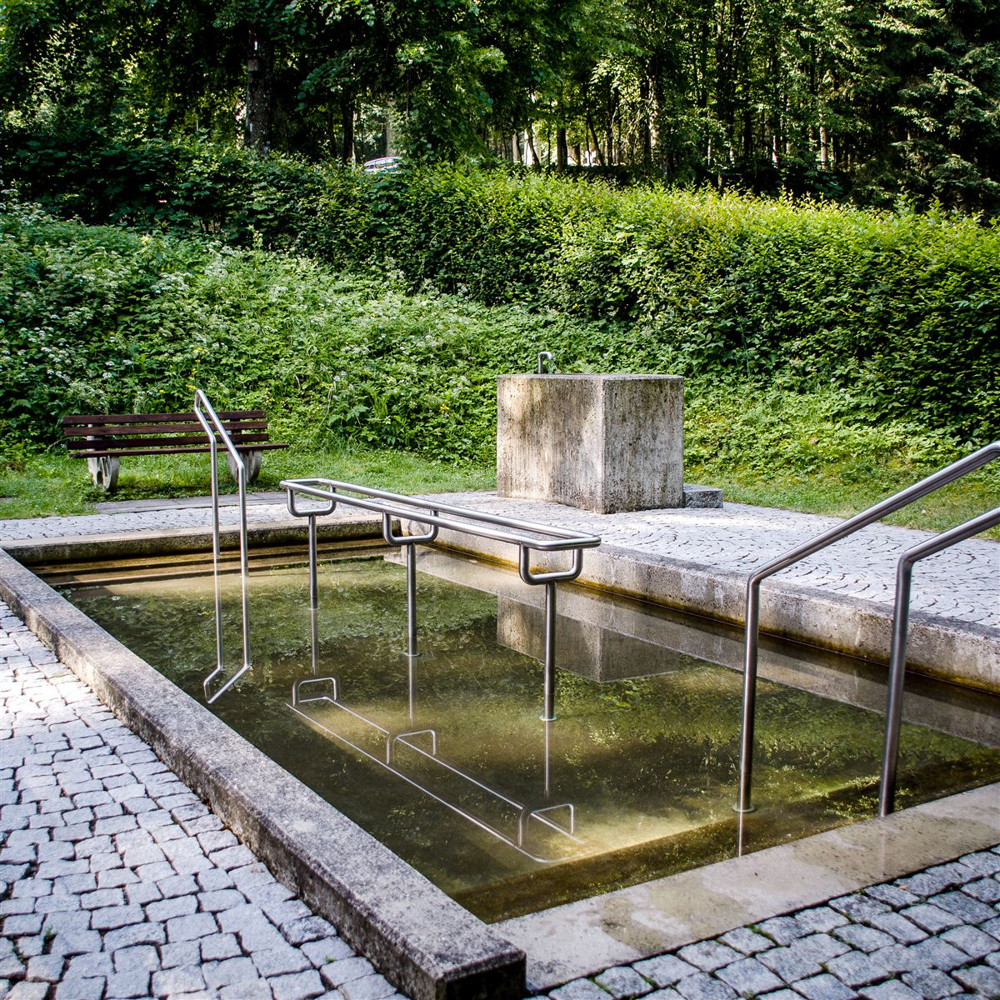
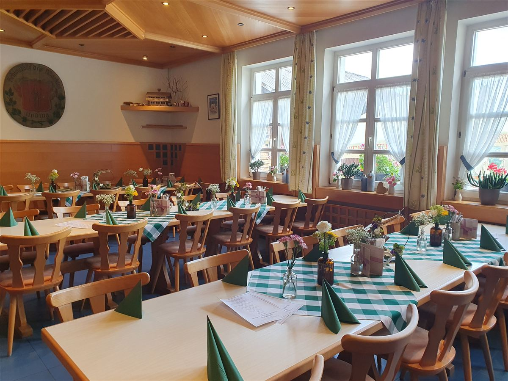

Geschichte & Gastfreundschaft
Ein Haus, eine Kirche, eine Quelle
Seit 1668 ranken sich Legenden um die Quelle von Heilbrünnl. Unser Gasthof steht seit Generationen an ihrer Seite – für Pilger, Wanderer und alle, die einkehren wollen.
Chronik
Von der Quelle zur Rokokokirche
Eine Kapelle an der Quelle
Der Legende nach entdeckte ein Hirte in einer Quelle ein Marienbild. Erst dem Pfarrer von Roding gelang es, es in einer Prozession zu bergen. An dieser Stelle entstand die erste Kapelle.
Erweiterung für die Pilger
Der wachsende Pilgerstrom sprengte die kleine Kapelle – sie wurde erweitert, um allen Besuchern Raum zu geben.
Die heutige Kirche entsteht
Die jetzige Rokokokirche ersetzte die Kapelle: ein spätbarocker Saalbau mit Walmdach, oktogonalem Turm und Zwiebelhaube. Bis heute sammelt sich das Quellwasser in einem roten Marmorbecken im Inneren.
Die Klause
An die Kirche wurde eine zweigeschossige Einsiedelei (Klause) angebaut – bis heute charakteristisch für das Ensemble am Hang über dem Regental.
Der Leonhardiritt
Eine bis heute lebendige Tradition: der jährliche Leonhardiritt, eine festliche Pferdeprozession, die Wallfahrt und bäuerliche Kultur der Region verbindet.
Gasthof & Pension Heilbrünnl
Direkt neben der Kirche führen wir das Wirtshaus mit Biergarten und Gästezimmern weiter – als Ort der Rast für Pilger, Wanderer, Familien und Feiernde.
Die Legende
Die Heilquelle von Heilbrünnl
Der Überlieferung nach entdeckte ein Hirte in einer Quelle ein Marienbild, das sich immer wieder seinem Griff entzog. Erst dem Pfarrer von Roding gelang es am folgenden Tag, in einer feierlichen Prozession zur Quelle, das Bild zu heben und in einem Bildstock zu bergen.
Die Quelle selbst blieb Ziel der Verehrung: In der 1730 erbauten Kirche sammelt sich das Wasser bis heute in einem Becken aus rotem Marmor. Der Quelle wird seit Jahrhunderten heilende Wirkung nachgesagt – besonders bei Augenleiden.
Das Gnadenbild selbst ist eine Kopie aus dem 17. Jahrhundert der berühmten „Salus Populi Romani“ aus dem Regensburger Dom. Über eine verborgene Tür in der Sakristei führt ein Zugang zur reich verzierten Rokokokanzel mit Reliefs der Kirchenväter; die Altarbilder stammen unter anderem von Franz Waldraft (1671).
Ein Kreuzweg mit Sandsteinstationen führt vom Regental hinauf zur Kirche, vorbei an einer Marien-Grotte aus Tuffstein. Patrozinien sind Maria und Maria Magdalena – an deren Fest am 22. Juli sowie an den traditionellen „Frauentagen“ ziehen bis heute Pilgergruppen nach Heilbrünnl.

Patrozinium: Maria & Maria Magdalena · Fest 22. Juli

Unser Haus heute
Bayerische Gastfreundschaft, Tag für Tag
Unsere Wirtsfamilie führt das Haus mit einer einfachen Überzeugung: Gäste sollen sich fühlen wie eingeladen, nicht nur bewirtet. Das gilt für den Pilger auf dem Kreuzweg genauso wie für die Hochzeitsgesellschaft im Saal.
Wir arbeiten mit regionalen Zulieferern, kochen bayerische Klassiker mit Sorgfalt und pflegen den Biergarten wie unseren eigenen Garten – weil er das Herzstück warmer Tage in Heilbrünnl ist.
Kontakt aufnehmenBesuchen Sie uns
Erleben Sie Heilbrünnl mit allen Sinnen
Ob als Tagesausflug, Wallfahrt oder Übernachtung im Regental – wir freuen uns auf Ihren Besuch.